Seleccionar localidad
{{ this.dato.nombre }}
 {{ this.diaSemana }}
{{ this.dato.temp_af.toFixed(1) }}º
S/D
{{ this.diaSemana }}
{{ this.dato.temp_af.toFixed(1) }}º
S/D
 Índice UV: {{uv}}
{{ this.dia }} de {{ this.nombreMes }} {{ this.anio}}
Índice UV: {{uv}}
{{ this.dia }} de {{ this.nombreMes }} {{ this.anio}}
{{ this.dato.hum_af }} %
{{ this.dato.RR_dia }} mm
 {{ this.dato.viento_medio }} km/h
{{ this.dato.viento_medio }} km/h
 {{ this.dato.direc }}
{{ this.dato.direc }}

{{ this.dato.presion }} hPa
---- hPa
No aplicar agroquímicos
Favorable para aplicar
{{ this.hora }} hs
PRONOSTICO
(OpenWeathermap.org)
ALERTAS
HOY
|
{{item[0]}}
|

|
{{item[2]}}º
|
{{item[3]}}%
|
{{item[4]}}km/h
|
A 7 DÍAS
|
{{item}}
|

|
|
{{item}}
|
|
{{item}}
|